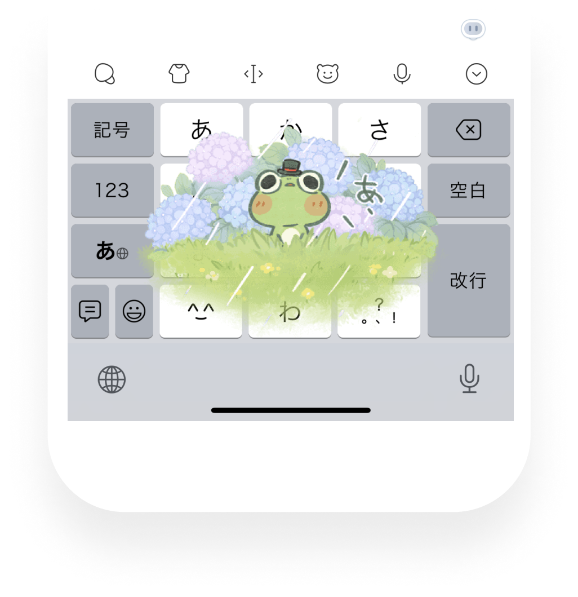

Simeji Premium 值不值得买？三档用户的付费账本
从免费版的广告骚扰到 Premium 的 AI 解锁，把 Simeji 的每一档功能对应到真实使用场景，算清楚哪类人该掏钱、哪类人能忍就忍。
开头：一个日本网友的灵魂拷问
"月 480 日元的 Simeji Premium 我到底要不要续？"——这条提问在日本推特和 Line 群里每隔一两周就会冒出来一次。
作为在 Simeji 免费版和付费版之间反复横跳过三次的老用户，我把这笔账掰开算给你看。Simeji 这套产品的定价策略其实挺鸡贼的，它不是给你一个简单的"免费够用 / 付费更好"的二选一，而是在功能树上精准地卡住了不同强度用户的痒点。你去它的官网看一眼功能列表就能感受到这种"精准卡痒点"的设计思路——你属于哪一档，直接决定了这 480 日元花得值不值。
先别急着打开钱包，也别急着卸载。往下看完你就知道自己该不该掏钱。
免费版到底给了什么
先把免费版的家底列清楚——很多人嫌免费版难用，其实是没摸清它的能力边界。想试试的话从下载拿安装包就行。
核心输入功能全开放：日文转换、假名输入、候选词预测，这些 Simeji 最基础也是最靠谱的能力，免费版一分钱不花就能用。云端超转换（クラウド超変換）也是免费的——那个能实时收录网络热词的功能，免费用户照样能享受到。想了解它的触发逻辑和更多隐藏玩法，去Simeji文档翻翻，有详细说明。

皮肤和表情有得挑：免费版自带几十套基础皮肤和表情素材，虽然不如付费版的联名皮肤那么花哨，但日常够用。输入特效也是免费的——打个"クリスマス"就飘雪花，这招在朋友群里装可爱特别好使。
免费版的三个硬伤：
一是键盘上方有广告条。这个是最大的槽点，尤其是在小屏手机上，广告条会吃掉候选词显示空间。切换应用时偶尔还会弹全屏广告。二是剪贴板历史上限 30 条，而且不支持置顶功能。对重度复制粘贴用户来说，这是个频繁踩的坑——复制了一段重要的日文合同条款，转头就被新的复制冲掉了。三是 AI 功能有次数限制。文本生成和智能回复这些功能，免费版每天只能用几次，多了就要等第二天。
Simeji Premium 多给了什么
480 日元/月（年费 4800 日元，相当于两个月免费）的 Premium，解锁的东西按价值排序：
| 解锁项 | 对应用户痛点 |
|---|---|
| 去广告 | 键盘清爽，不再被广告条挤候选词 |
| AI 功能无限使用 | 文本生成、智能回复、AI 翻译全部不限次数 |
| 剪贴板置顶 + 扩容 | 30 条上限 → 200 条，支持永久置顶 |
| 联名皮肤和特效 | 动漫、游戏、品牌限定皮肤，每月更新 |
| 语音输入高级版 | 更长时长、更高准确率 |
这里有个关键细节：Premium 的 AI 无限使用是最大的差异化卖点。Simeji 的 AI 文本生成能帮你写日文 SNS 帖子、邮件草稿、生日祝福——这些日常实用场景的效果相当不错。免费版每天只能用几次，刚尝到甜头就被限流了，这种体验反而比完全没有 AI 更难受。
分档算账：你属于哪一档
轻度用户：只用日文输入的普通学生党
如果你每天用 Simeji 的时间不超过 15 分钟——主要就是发 Line 消息、偶尔打打日文邮件、查个日语单词——那免费版完全够用。
广告条确实烦，但 15 分钟的使用时长里，广告条对效率的影响微乎其微。云端超转换免费给，输入特效免费玩，皮肤虽然不是联名款但也够看。结论：别花这钱。 把 480 日元省下来买杯奶茶更香。
唯一例外：如果你是那种看到广告就浑身难受的人，为了心理健康掏钱也是合理的。480 日元买个眼不见心不烦，怎么算都划算——但前提是你真的在意，而不是被广告条偶尔弹出来烦到一次就冲动消费。
主力用户：每天打字 30 分钟以上的社畜或内容创作者
这一档是 Premium 的核心目标人群，也是最该认真算账的一档。
你每天用 Simeji 打字超过半小时——可能是日文邮件往来、可能是社交媒体运营、可能是翻译工作。这时候免费版的三个硬伤开始真正影响效率：
- 广告条在频繁切换输入法时反复弹出，一天被打断十几次，每次浪费 3 秒钟，一个月累积 20 分钟。
- 剪贴板 30 条上限，复制一段日文合同条款被下一条冲掉了，找回来花 5 分钟，一个月踩坑 3~5 次，浪费 15~25 分钟。
- AI 文本生成每天限用几次，写一封请假邮件刚写了个开头就不能用了，手动写完花 10 分钟，一个月浪费 30~40 分钟。
把这些时间加起来：一个月因为免费版的限制，你至少浪费了 70~85 分钟。Premium 月费 480 日元，相当于你用 480 日元买 80 分钟的时间。这笔账就很有意思了——你自己的时间值不值 6 日元/分钟？如果你是时薪 3000 日元的社畜，一分钟值 50 日元，那这 480 日元相当于白捡；如果你时薪 500 日元，一分钟值 8 日元，还是值；如果你是时薪 1500 日元以下的学生，那就再想想。
结论：主力用户里，时薪 1000 日元以上的闭眼买；学生党再忍忍，等手里宽裕了再说。
重度用户：AI 功能当饭吃的内容生产者
如果你每天用 Simeji 打字超过 1 小时，而且AI 功能是你的核心生产力工具——比如你是日文博主、电商运营、翻译人员，每天要生成大量日语文案和回复——那Premium 是必须的，甚至可以说免费版会严重拖你的后腿。
免费版的 AI 次数限制是按天算的，而且不同功能共享同一个配额。你早上写了三条推文用了三次 AI，下午想帮朋友写生日祝福就用不了了——这种"AI 刚上手就被掐断"的体验，对重度用户来说比没有 AI 还糟糕。Premium 的无限 AI 意味着你可以随时随地让 AI 帮你写、帮你回、帮你改，用完还能让 AI 再润色一遍。
剪贴板扩容到 200 条 + 置顶功能，对重度复制粘贴用户来说更是刚需。你可能同时在做五个翻译项目，每个项目有十段高频复用的术语——置顶功能让这些术语永远不会被冲掉，复制粘贴效率翻倍。
结论：重度用户不用看账，直接开 Premium。 如果你每天靠 Simeji 产出内容，Premium 的 480 日元大概率是你当月最划算的一笔订阅。
替代方案：不付钱有什么路可走
如果你看完上面的分析觉得"我就是不想花钱"，也不是没退路：
切换到 Google 日本语输入法（Gboard）。Gboard 的日文输入质量其实不亚于 Simeji，而且完全免费无广告。缺点是皮肤和表情远不如 Simeji 丰富，没有输入特效，也没有云端热词同步——如果你在意这些"非核心但让人开心"的体验，那 Gboard 就不太合适。
用 Simeji 免费版 + 手动缓解广告。你可以把键盘设置里的广告通知关掉，虽然不能完全去除键盘上方的广告条，但至少不会弹全屏广告。剪贴板的问题可以靠"重要内容复制完立刻粘贴到便签"来规避。AI 次数限制……就真的只能忍了。
等促销活动。Simeji 偶尔会搞限时折扣，比如新用户首月 90 日元，或者年付打七折。不急着用的话可以等等看。
最终结论：三秒对号入座
| 你的情况 | 决策 |
|---|---|
| 每天打字 < 15 分钟，不在意广告 | 免费版就行，别花钱 |
| 每天打字 30~60 分钟，时薪 1000+ 日元 | 值得买，时间比钱贵 |
| 每天打字 30~60 分钟，学生党 / 时薪低 | 忍忍，或切 Gboard |
| 每天打字 > 60 分钟，AI 当生产力 | 必须买，Premium 是刚需 |
| 单纯讨厌广告，其他无所谓 | 看心情，480 日元买清净不亏 |
最后说句公道话：Simeji 免费版其实挺厚道的，核心功能全放出来了，不逼你付钱。Premium 锁定的都是"让体验更好"而非"没有就不能用"的东西——这种定价策略比那种"免费版只能打三个词、付费版才能正常用"的 App 要良心得多。所以你真不用有心理负担，该付费就付费，该白嫖就白嫖，各取所需。
装完切到 Simeji 键盘就能直接用了。